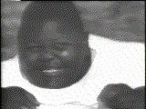

* Attention * This box (http://rs-nt-1.une.edu.au) that I have just now re-'hacked' was first 'hacked' by Forpaxe. Yes, this was cold fusion, No, I don't hack with cold fusion. I re-did this only because Forpaxe did it. I rehacked http://fjsrc.urban.org/, but before attrition saw it, it went down. I am posting the HTML I put on that page, on this page, just to let the world know. I will re-own every box Forpaxe has ever done, until they admit absolute defeat by the unmerciful ne0h. Forpaxe, you are owned. Not because im not a hacker, or because im lame, Because your sloppy. * Attention * Okay, son. Listen to ne0h one more time, you obviously didint get my fucking message through. Last hack: (on this box, that is.) >Forpaxe Owns You All >l0l.... F0rpaxe had already reported that m1crochip >doesn´t have nothing to do with an asshole called João >Carlos Ramos Matos. - how did you know it had a ã in his name? >We have never posted that crap on >2600. Who said you posted it on 2600? >It seems that guy had also named is group f0rpaxe, >maybe to imitate us. right, the postings were made in '98, but you started 'hacking' right when cold fusion came out.. are you telling us, these guys imitated you, a year ago? WOW WE HAVE PSYCHIC HACKERS. whoohoo.. you dumbass. >He was never a member of f0rpaxe heh. right. >and is nickname is Microchip and not m1crochip (there >is a little difference: one is a lame nickname the other >is m1crochip real name). neoh is now known as ne0h, ne0h is now known as m1crochip hey, look, now im lame.. my name is m1crochip. nicks change, you could have easialy changed it in a year. stupid ass. >Neoh, eou can say what you want >about us couz your just another lamer who want us bad. sp34k pr0p3rly fuQn7tz. lamer? heh. right. A lamer knows howto patch a box. hahahahahaha! >If u want us bad go and work together with the FEDS or >phone to what you belive to be m1crochip. l0l. I called you. You hung up on me. That was mean. it is funny, isin't it? >We don´t >care about that asshole. If he wanted to imitate us >then FBI will be looking for him and not for us. Cool.. right, did you notice your docs are also registered under Forpaxe.com ? Or is this my imagination? haha. >. Shame on those who try to fight against us. >Those only show that they don´t support the scene. You have no scene, shut the fuck up. >Here is a little msg to neoh: was this a coldfusion >hack? it doesn´t seem so. http://fjsrc.urban.org/cfdocs/expeval/m1.cfm C:\WINNT\ Name Size Modified date [Dir] $NtServicePackUninstall$ 0 12/31/1998 10:34:08 AM [Dir] . 0 12/12/1997 01:49:30 PM [Dir] .. 0 12/12/1997 01:49:30 PM [File] ? 0 12/16/1997 11:05:12 AM [File] ACROREAD.INI 2385 05/21/1999 11:06:46 AM [File] Active Setup Log.txt 16165 12/31/1998 10:42:48 AM [File] Administrator.acl 35262 01/11/1999 04:02:44 PM [File] Bind List Log.txt 22624 12/31/1998 looks like NT to me.. what do you think? when your going to talk shit, learn to patch up a fucking box. >Was metrokc from tw an NT >machine? yes. >we don´t think so. we? (Hi IL.. chill with me and eckis. :\) btw, IL left Forpaxe. (sigh) I guess you forgot in your little world. >Was the NASA hacks >coldfusioned? we don´t think so. How long did you thank IL for them? >Why we have root on >some gov servers? you don't. >Coldfusion? yes. >we don´t think so... no, but you do. >This is the truth. sure it is. I already caught you in a lie, dumbass. >By the way: FBI - please bust that >sucker named João Ramos. right. >He diserves to know that he >shouldn´t use our name. Don´t say things when you >aren´t certain. I was certain, and I am certain. you are a lame fuck. oh, and noone likes you. :] >If PAPA starts saying he is m1crochip will you belive >it? . heh. who's your daddy? >m1crochip/ in0de who else should it be? YOUR MOMMA. -- rehacked by ne0h. -]LevelSeven]-  find us on EFnet = #feed-the-goats (by the way Forpaxe, now you look *really* bad.) "Error","06/15/99","13:45:25","209.198.242.34", "Mozilla/4.0 (compatible; MSIE 4.01; Windows 98)", "An error has occurred. Forpaxe forgot to clean logs"; *** Looking up 209.198.242.34 *** Resolved 209.198.242.34 to isis-ip.esoterica.pt HA hA hA hA HA hA hA \